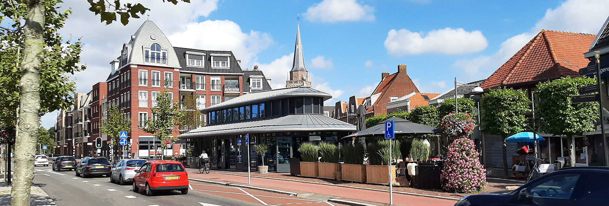
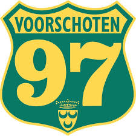
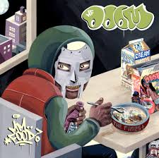

Thijs Kanbier
Mijn naam is Thijs Kanbier en ik ben 16 jaar oud. Ik woon al bijna heel mijn leven in het dorpje Voorschoten samen met mijn ouders. Ik zit in 5-vwo op het Vlietlandcollege en werk elke dag hard voor mijn vwo-diploma. Ik heb een E&M (economie en maatschappij) profiel vorig jaar gekozen en ben hier erg blij mee, omdat ik nu bedrijfseconomie en natuurlijk ook informatica heb. Beide vakken vind ik erg interessant en bevallen me erg goed.
Familie:Familie
Mijn moeder heet Annette en is 55 jaar oud. Ze werkt bij Topaz, een verzorgingstehuis waar ze eten maakt en zorgt voor de oudere mensen. Mijn vader heet John en is 61 jaar oud. Hij werkt bij de politie en heeft hier een financiële rol. Ik heb ook nog een zus genaamd Renée die 26 jaar oud is en al een tijdje met haar vriendje woont. Mijn katten zijn zo aanwezig en zo belangrijk voor mij en mijn ouders dat je ze ook als familie kunt beschouwen. Mijn katten heten Puck en Floor en we hebben ze nu al 8 jaar.
Hobby's
Vanaf jongs af aan houd ik heel erg van voetbal. Ik heb heel lang gevoetbald bij Voorschoten 97 voor de Jo17-4. Ik ben echter dit jaar gestopt en overgestapt op fitness, wat ik ook nu heel erg leuk vind. Daarnaast vind ik het heel erg leuk om met vrienden af te spreken, vaak gaan we voetballen, bijkletsen of gamen. Mijn grootste hobby moet muziek luisteren zijn. Ik luister elke dag meerdere uren muziek, omdat het me motiveert en het me in een goede stemming brengt. Ik luister voornamelijk naar Hiphop, denk hierbij aan artiesten zoals: Kanye West, Kendrick Lamar, MF DOOM, Travis Scott en Tyler the creator. Mijn moeder speelt sinds mijn geboorte vaak muziek van Mickeal Jackson, U2, David Bowie en Elvis Presley af. Daarom luister ik ook nog regelmatig naar muziek voor mijn tijd.

